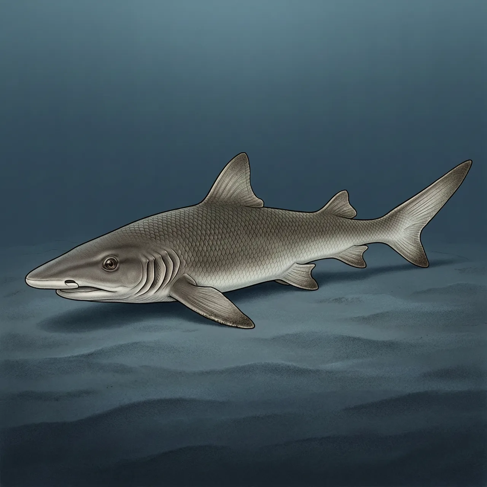
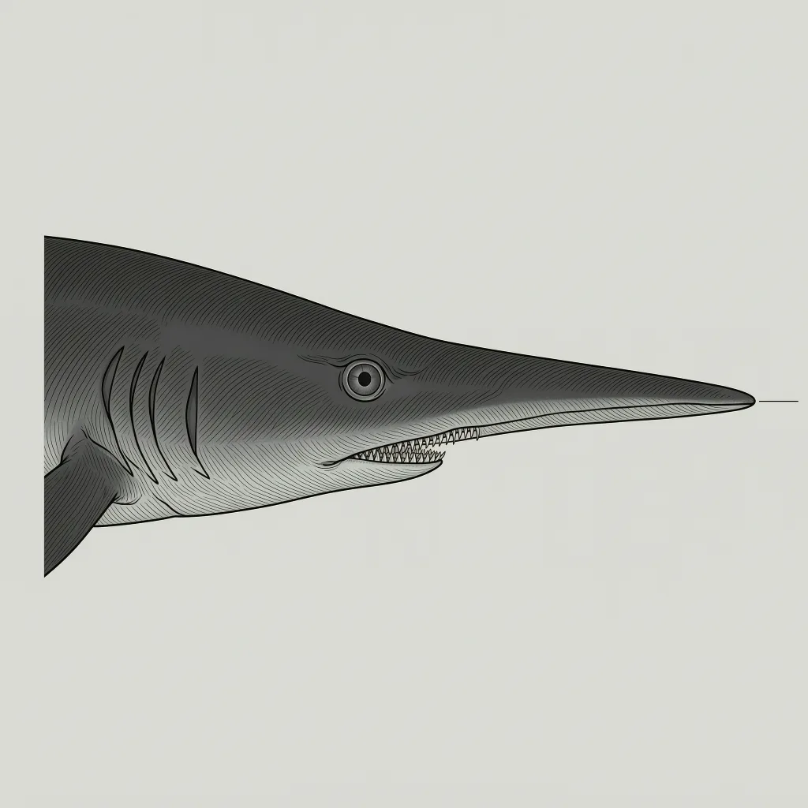

长头光尾鲨是猫鲨科光尾鲨属的一种深海鲨鱼，学名于1975年发表，模式产地在日本高知。它的头部狭长，已知分布见于日本高知以及南海、东海等海域。这种鲨鱼的生活动态几乎没有被记录过，IUCN红色名录将其列为无危。
1975年，日本高知海域采到的标本被定名为一个新种：长头光尾鲨。到今天，它的已知分布仍然很集中——日本高知，以及向南延伸的南海、东海等海域，模式产地就落在高知。作为猫鲨科光尾鲨属的成员，它的招牌是那颗向前收窄的狭长的头；至于它住在多少米深的水层，公开记录里几乎找不到数字。
猫鲨科的鲨鱼多数不胎生，而是产卵鞘：鞘的两端生有卷须，被固定在海底的硬物上，卵在原地发育，幼鲨孵出后独立生活。长头光尾鲨作为光尾鲨属的一员，大概率沿用这套程序，但针对这个种本身的繁殖记录几乎是空白——深海能给观察者的机会太少，连它的卵鞘长什么样都没人描述过。
长头光尾鲨的IUCN等级是无危，听起来像是被了解得很透，实际相反：除了产地和分布，它的生活史鲜为人知——吃什么、活多久、几月繁殖，都没有可靠数字。资料里提到它，往往两行就写完了：一句分类归属，一句「分布于日本高知以及南海、东海」。对这条鲨鱼而言，安全与陌生是同一件事的两面。
